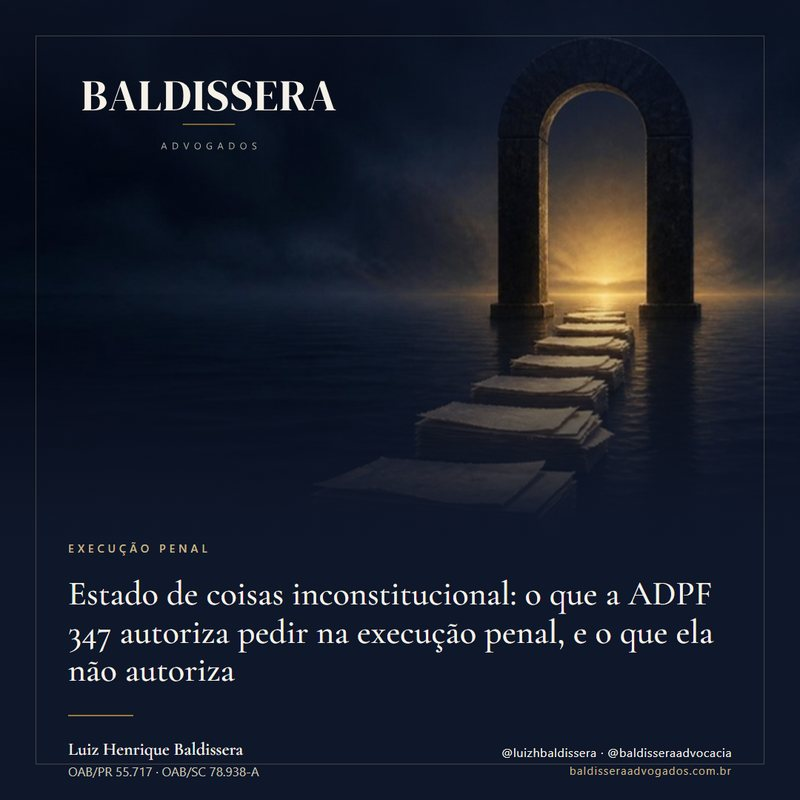
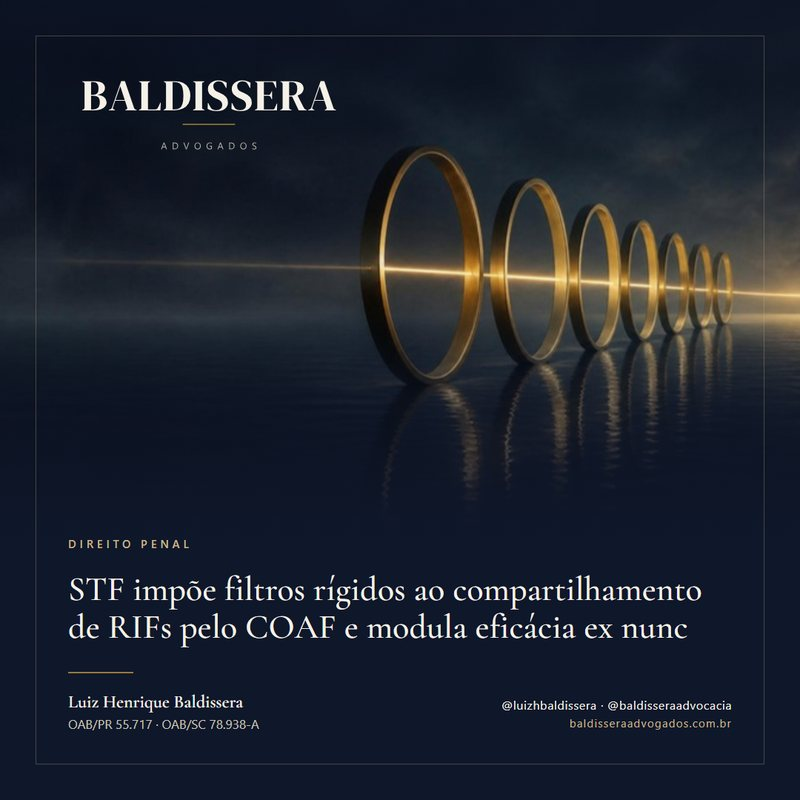

Hub editorial
Publicações
Artigos técnicos, análises de precedentes recentes do STF e do STJ e ensaios sobre temas processuais e substantivos, escritos pelos advogados da banca.
Tópicos cobertos
Das edições publicadas
STJ: aprovação no ENEM ou no Encceja durante a pena pode gerar remição, mesmo para quem já tinha concluído o ensino médio
O STJ fixou, no Tema Repetitivo 1.357, que a aprovação no ENEM ou no Encceja durante a pena pode gerar remição mesmo para quem já havia concluído o ensino médio antes da prisão. O acréscimo de um terço, nesse caso, fica afastado, e a repetição do mesmo exame já aproveitado na mesma execução não gera novo desconto.
Luiz Henrique BaldisseraSTJ: as noites de recolhimento em casa durante o processo descontam da pena, com ou sem tornozeleira
Quem respondeu ao processo com a obrigação de ficar em casa à noite e nos dias de folga tem esse tempo descontado da pena, mesmo sem tornozeleira eletrônica. A Terceira Seção do STJ fixou a regra em recurso repetitivo, de observância obrigatória pelos juízes: as horas de recolhimento viram dias, e a fração menor que 24 horas é desprezada. O desconto se pede ao juízo da execução, com o cálculo refeito.
Luiz Henrique BaldisseraSTJ: pouca droga não justifica pena-base maior, seja qual for a substância
Quem responde ou foi condenado por tráfico com pequena quantidade de droga pode ter a pena-base reduzida se o juiz a aumentou pela natureza ou pela quantidade da substância. A Terceira Seção do STJ fixou essa tese no Tema Repetitivo 1.262, e um julgado de 2026 a aplicou a 50,17 g de cocaína. No mesmo caso, o tráfico privilegiado, o regime e a substituição da pena tiveram outro desfecho.
Luiz Henrique BaldisseraImóvel em leilão: o que o edital não mostra e as vias legais com menor disputa
Leilões judiciais, leilões de imóveis retomados por bancos e vendas na falência permitem comprar abaixo da avaliação, e a lei prevê vias em que, em regra, há menos concorrentes. Em troca, a arrematação assinada é irretratável e os prazos para desfazê-la são curtos. O exame do edital, da matrícula, dos débitos e da ocupação define o negócio.
Luiz Henrique BaldisseraSTJ: com mais de uma condenação, a progressão é calculada pena por pena, e o tempo para progredir pode cair
Quem cumpre mais de uma condenação na mesma execução pode ter a progressão de regime calculada separadamente para cada pena, com a lei mais favorável a cada uma. A Terceira Seção do STJ fixou essa tese, por unanimidade, no Tema Repetitivo 1.354, já transitado em julgado. Com a mudança de 2026 no art. 112 da LEP, conferir o cálculo ficou ainda mais importante.
Luiz Henrique BaldisseraSTJ: mãe ou gestante condenada por associação para o tráfico pode progredir de regime com 1/8 da pena
A mulher presa gestante, mãe ou responsável por criança ou pessoa com deficiência, condenada por associação para o tráfico ou por associação criminosa, pode progredir de regime depois de cumprir 1/8 da pena, se preencher os demais requisitos do art. 112, § 3º, da LEP. Foi o que decidiu a Terceira Seção do STJ, por unanimidade, no Tema Repetitivo 1.374.
Luiz Henrique BaldisseraPena cumprida em condição degradante conta em dobro: o que o STJ extraiu da Corte Interamericana no RHC 136.961/RJ
Em 2018, a Corte Interamericana de Direitos Humanos determinou que cada dia de prisão no Instituto Penal Plácido de Sá Carvalho, no Rio de Janeiro, fosse computado em dobro. A Quinta Turma do STJ decidiu, por unanimidade, que a contagem vale para todo o período ali cumprido. O precedente é forte, mas tem endereço e limites precisos.
Luiz Henrique Baldissera
Estado de coisas inconstitucional: o que a ADPF 347 autoriza pedir na execução penal, e o que ela não autoriza
O STF reconheceu o estado de coisas inconstitucional do sistema prisional e mandou que juízes considerem esse quadro também durante a execução penal. A decisão pesa a favor do apenado, mas só rende quando vem acompanhada da prova concreta da unidade e de um pedido específico.
Luiz Henrique BaldisseraO teste da domiciliar humanitária na Sexta Turma do STJ: o que a defesa precisa demonstrar de plano para acionar o art. 318, II e III, do CPP
Análise dos quatro precedentes que articulam o eixo material do art. 318, II e III, do CPP: o teste objetivo fixado no HC 619700/RJ (extrema debilitação por doença grave demonstrada de plano e prova documental da ineficiência estatal no tratamento intramuros); a aplicação concreta no HC 574582/RJ; a projeção sobre a imprescindibilidade parental no RHC 68500/RS; e o limite operativo revelado pelo voto vencido do HC 715637/GO. Implicações práticas: o programa probatório que a defesa precisa executar.
Luiz Henrique BaldisseraDoação dissimulada não dispensa colação: o STJ reafirma a forma expressa do art. 2.006 do Código Civil
Comentário ao REsp 2.171.573/MS, Rel. Min. Antonio Carlos Ferreira: aplicação dos arts. 2.005 e 2.006 do CC e distinguishing em relação ao art. 167. A análise percorre a regra geral da colação como instrumento de igualdade dos quinhões, a forma taxativa da dispensa (testamento ou próprio título de liberalidade), o argumento de boa-fé que veda a dispensa tácita derivada de simulação, e organiza três frentes operativas — defesa do herdeiro lesado, planejamento sucessório seguro e auditoria patrimonial em inventário.
Charys BaldisseraSTJ revisa o Tema 931 e devolve à autodeclaração de pobreza força para extinguir a punibilidade pendente apenas pela multa
Comentário ao REsp 2.090.454/SP, Rel. Min. Rogerio Schietti Cruz: o terceiro capítulo do Tema 931. A análise recompõe os três tempos da tese (2015, 2021, 2024), expõe o distinguishing fundado no destinatário original da ADI 3.150/DF (colarinho branco), trabalha a inversão do ônus probatório com base no art. 99, § 3º, do CPC e no Tema 1.178 da Corte Especial, e desenha quatro frentes operativas para a defesa em execução penal — petição de extinção, agravo em execução, recurso especial com prequestionamento e revisão de decisões pretéritas sob o regime de 2021.
Anderson Spanhol
STF impõe filtros rígidos ao compartilhamento de RIFs pelo COAF e modula eficácia ex nunc
Comentário ao RE 1.537.165/SP, Rel. Min. Alexandre de Moraes: a decisão de 21/04/2026 esclareceu a eficácia ex nunc da liminar concedida em 27/03/2026, fixando sete requisitos vinculantes — procedimento formal instaurado, identificação objetiva do investigado, pertinência temática estrita, vedação à fishing expedition, extensão a ordens judiciais e CPI/CPMI, proibição em procedimentos preliminares não sancionadores, e ilicitude com contaminação de provas derivadas. A análise lê com cuidado a cláusula de salvaguarda da modulação — que preserva o controle concreto da admissibilidade probatória caso a caso — e desenha três frentes de impugnação para a defesa em crimes financeiros, lavagem e organização criminosa.
Luiz Henrique BaldisseraSTJ restabelece impronúncia em tentativa de homicídio: a pronúncia não sobrevive sem prova judicializada
Comentário ao AREsp 3.065.825/PE, Rel. Min. Reynaldo Soares da Fonseca, j. 17.04.2026: o STJ deu provimento ao recurso especial para restabelecer sentença de impronúncia que havia sido reformada pelo TJ/PE com base no princípio do "in dubio pro societate". A análise destrincha três pontos da fundamentação com utilidade direta para a defesa em primeira instância, em apelação contra sentença de impronúncia e em sede de recurso especial — incluindo a técnica que permite ultrapassar o filtro da Súmula 7 do STJ em matéria de pronúncia.
Luiz Henrique Baldissera
Os prints, a prisão e o STJ: o caso em que a Sexta Turma exigiu perícia técnica e relaxou a preventiva fundada em conversas de WhatsApp sem certificação
A história de um caso real: paciente preso preventivamente desde novembro de 2022 por homicídio qualificado, com a acusação sustentada em prints de WhatsApp e DVR juntados aos autos sem extração forense nem hash. Em fevereiro de 2026, a Sexta Turma do STJ exigiu perícia técnica complementar em quatro itens, substituiu a prisão preventiva por medidas cautelares diversas — e, no acórdão, explicou em palavras precisas como a defesa criminal pode atuar diante de prova digital sem certificação técnica.
Luiz Henrique BaldisseraQuando a cadeia de custódia se rompe: cinco hipóteses em que a falha do Estado pode anular a condenação
Análise técnica das cinco situações concretas em que falhas no rastreamento da prova material — apreensão sem lacre, perda da fonte primária do laudo, recusa de acesso à prova digital bruta, contaminação cruzada de vestígios, salto na cronologia documental — podem levar à nulidade do laudo pericial e à reversão de condenações criminais. Com base em jurisprudência consolidada da Sexta Turma do STJ e nos arts. 158-A a 158-F do Código de Processo Penal.
Luiz Henrique BaldisseraSTF rejeita os embargos no Tema 506 e fixa o que realmente importa: ônus da prova, abrangência da descriminalização e a sanção que ficou de fora
Análise dos cinco pontos que o STF esclareceu ao rejeitar os embargos de declaração no Tema 506: a inversão do ônus da prova que não houve (item 8 da tese), a descriminalização limitada à cannabis sativa, a exclusão do inciso II (prestação de serviços) do rol de sanções aplicáveis, a participação do MP nos mutirões carcerários e a ausência de modulação temporal — abrindo espaço para revisão criminal em casos pretéritos. Implicações práticas em audiência de custódia, fase processual, execução penal e Tribunal do Júri.
Karla da Costa SampaioDas pautas previstas
Temas em desenvolvimento para as próximas publicações. A ordem pode mudar conforme a evolução dos precedentes e das questões tratadas.
- Entrada da polícia em casa sem mandado e sem fundadas razões prévias: a prova obtida cai e, com ela, a condenação.Direito Penal
- Habeas corpus no STJ e no STF: as hipóteses de cabimento em 2026.Tribunais Superiores
- Saída temporária após a derrubada do veto à lei de 2024Execução Penal
- Desistência da compra de imóvel na planta: o que a Lei do Distrato permite reter.Imobiliário
- Juros de mora em dívida civil antiga: quando vale a taxa Selic.Civil
- Plano de previdência VGBL não entra na herança: o que isso muda na partilha.Família e Sucessões
- Reparação do dano ambiental não prescreve: o alcance do Tema 999 do STF.Ambiental
- Entrada da polícia em casa sem mandado e sem fundadas razões prévias: a prova obtida cai e, com ela, a condenação.
- Prisão preventiva decretada só pela gravidade do crime em abstrato: por que o STJ a revoga.
- Reconhecimento de pessoas fora do rito do art. 226 do CPP: o que o STJ fixou como obrigatório.
- Denúncia genérica em crime societário: o dever de descrever a conduta de cada acusado.
- Confissão atenua a pena mesmo quando o juiz não a usou para condenar.
- Habeas corpus no STJ e no STF: as hipóteses de cabimento em 2026.
- Regime inicial mais rigoroso do que a pena permite exige motivação concreta: as Súmulas 718 e 719 do STF.
- Agravo regimental contra decisão monocrática no STJ e no STF: prazo, requisitos e o que muda no colegiado.
- Habeas corpus repetido não gera multa, salvo abuso comprovado: o que o STJ decidiu.
- Recurso especial criminal: o que o STJ pode rever e onde esbarra na Súmula 7.
- Decisão que só copia os fundamentos de outra precisa enfrentar os argumentos novos relevantes.
- Saída temporária após a derrubada do veto à lei de 2024
- Restrições de visitas em condenações por crimes contra a mulher
- Prisão provisória pode integrar o tempo exigido para indulto e comutação
- Pessoa em regime aberto ou livramento condicional pode visitar familiar preso
- Limites da revista íntima de visitantes nos presídios
- Doença grave e condições de tratamento na análise da prisão domiciliar
- Cuidados com recém-nascido no presídio podem contar para remição da pena
- Leitura durante a pena exige avaliação válida para gerar remição
- Súmula vinculante afasta a natureza hedionda do tráfico privilegiado
- Cancelamento de súmula reforça o limite de perda dos dias remidos por falta grave
- Curso a distância precisa integrar o projeto pedagógico do presídio para gerar remição
- Regressão cautelar de regime pode ocorrer antes da oitiva da pessoa presa
- Indulto de 2025 e condenações simultâneas por crimes impeditivos e não impeditivos
- Indulto humanitário de 2025 exige enquadramento e prova da condição de saúde
- Prescrição da multa criminal continua sujeita aos prazos penais
- Lei de 2026 prevê prisão federal para lideranças de organizações criminosas
- Porte de maconha para uso pessoal no presídio pode configurar falta grave
- Nova pena por crime durante o livramento depende da situação do benefício anterior
- STF examina se a exigência de exame criminológico alcança crimes anteriores à lei
- STF examina mudanças nas regras de progressão trazidas pela Lei 15.402/2026
- Desistência da compra de imóvel na planta: o que a Lei do Distrato permite reter.
- Cessão de direitos sobre imóvel: os riscos do contrato e as cláusulas de proteção.
- Atraso da incorporadora: o prazo para pedir de volta a comissão de corretagem.
- Quando a corretora também responde pelo descumprimento da incorporadora.
- Imóvel financiado com alienação fiduciária: até quando é possível pagar os atrasados para não perder o bem.
- Imóvel financiado: o banco não responde pelo IPTU antes de consolidar a propriedade e entrar na posse.
- Juros de mora em dívida civil antiga: quando vale a taxa Selic.
- Justiça gratuita não pode ser negada só porque a renda passa de um valor fixo.
- Suspensão da CNH e retenção do passaporte por dívida: os limites fixados pelo STJ.
- Seguradora que indeniza e cobra do causador do dano não herda as vantagens processuais do consumidor.
- Nova Lei de Seguros: exclusões de cobertura precisam estar escritas de forma clara.
- Plano de previdência VGBL não entra na herança: o que isso muda na partilha.
- ITCMD sobre VGBL e PGBL: o que o STF decidiu sobre a cobrança do imposto.
- Companheiro e cônjuge na sucessão: os efeitos do fim da distinção do art. 1.790 do Código Civil.
- Cláusula de inalienabilidade em doação ou testamento: quando o herdeiro pode pedir o cancelamento.
- O divórcio pode ser decretado logo no início, antes de terminar a discussão sobre bens e filhos.
- Reparação do dano ambiental não prescreve: o alcance do Tema 999 do STF.
- A cobrança judicial da reparação do dano ambiental também não prescreve.
- Imóvel com passivo ambiental: a obrigação de recuperar acompanha o bem, com a exceção de quem vendeu antes do dano.
- Área de preservação permanente em zona urbana consolidada: quando a lei municipal pode definir outra faixa.
- Termo de ajustamento de conduta ambiental: o que se pode negociar e o que vincula.
Do recebimento das publicações
Cadastre seu e-mail para receber, uma vez por mês, o artigo técnico mais recente diretamente do escritório.
Em conformidade com a Lei Geral de Proteção de Dados (Lei 13.709/2018).